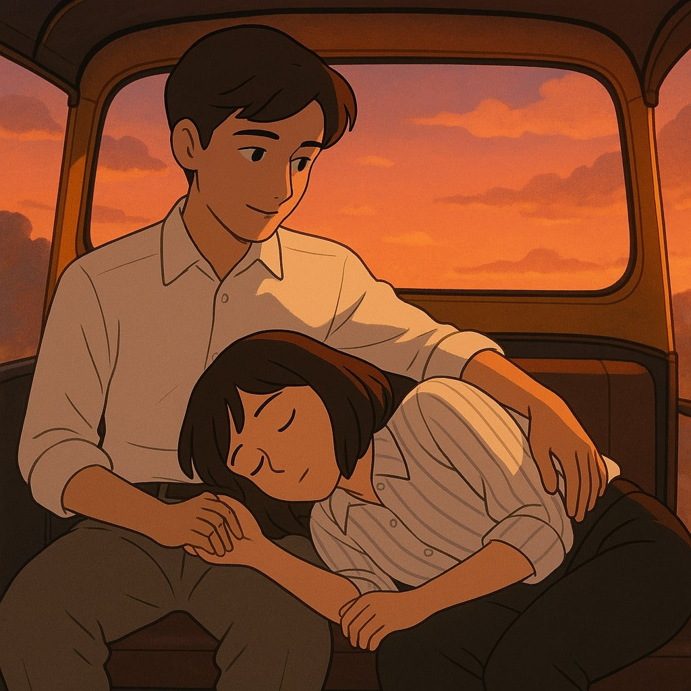

you waited,
at the metro gate,
while the day still clung to my shoulders.
my office hours dragged,
but you —
you showed up like the part of the day I’d been waiting for.
we talked —
well, I talked,
about deadlines and dumb people
and why I hate my chair at work.
and you just listened.
not out of obligation —
but like you actually cared.
like you liked the way i existed.
and then the auto —
how it hummed like a lullaby
while I melted
into your lap
like sleep had found its favorite place.
you held me
like something fragile,
kissed my forehead
not bold, not dramatic —
just a tiny, quiet thing.
like a thought you couldn't hold in.
no confessions,
no perfect lines.
just the sound of the city,
your hand in mine,
and the start of something
we didn’t have words for yet.